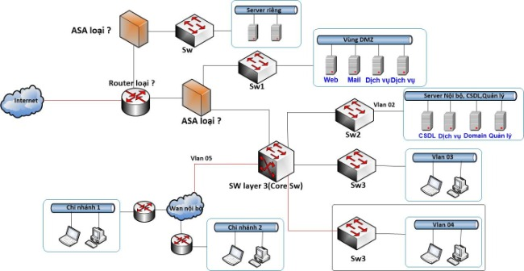

I. Vai trò bảo trì hệ thống mạng và những điều cần phải lưu ý:
Ngày nay, hệ thống mạng đang phát triển mạnh mẽ và được áp dụng hầu hết vào các lĩnh vực công nghiệp khác nhau. Một hệ thống mạng dù công suất lớn hay nhỏ nếu không được bảo trì hệ thống mạng thường xuyên thì cũng rất dễ gặp phải sự cố trong quá trình hoạt động. Chính vì vậy, ngay khi hệ thống mạng được đưa vào hoạt động, người quản trị mạng cần chuẩn bị và lập kế hoạch cũng như có những kịch bản xử lý các yếu tố tác động trong quá trình vận hành, quá trình hoạt động của thiết bị mạng để đưa ra một phương án xử lý nhanh chóng, tối ưu và hiệu quả cao nhất.
Tuy nhiên, để đảm bảo cho hệ thống mạng hoạt động liên tục mà không gặp phải trục trặc, sự cố về ảnh hưởng tới hiệu suất thì việc bảo trì hệ thống mạng là một việc không thể thiếu.
II. Những điều cần lưu ý khi bảo trì hệ thống mạng:
Bảo trì hệ thống mạng nắm giữ một vai trò vô cùng quan trọng, SAIERCOM Solutions sẽ chia sẻ những điều cần phải lưu ý khi bảo trì hệ thống để tránh xảy ra những trường hợp không đáng có.
III. Những qui trình cần phải lưu ý như sau:
– Sao lưu hệ thống trước khi bảo trì: Đối với mỗi doanh nghiệp việc sao lưu database của hệ thống là việc hết sức quan trọng bởi không thể đảm bảo chắc rằng trong quá trình bảo trì sẽ không xảy ra các sự cố như: mất dữ liệu, mất cấu hình trước đó .v.v…
– Cần tìm một chuyên gia về bảo trì hệ thống mạng: Việc tự ý tháo dỡ, sửa chữa hay ngắt hoạt động của một bộ phận thiết bị sẽ ảnh hưởng nghiêm trọng tới toàn bộ hệ thống mạng. Vì vậy, nếu bản thân không có nhiều hiểu biết về nguyên lý hoạt động hệ thống mạng, bảo trì hệ thống mạng thì nên thuê các chuyên gia bảo trì để sửa chữa thay vì tự tháo lắp, để tránh các sự cố không đáng có.
– Kiểm tra thông tin của hệ thống trước khi tiến hành bảo trì để tránh trường hợp bị mất hoặc lộn xộn dữ liệu sau khi sửa chữa.
– Sau khi đã hoàn tất việc bảo trì xong thì nên test lại hệ thống một lần cuối để xác định hệ thống không còn bị lỗi và xem hệ thống đã hoạt động ổn định, bình thường chưa.
IV. Lợi ích của bảo trì hệ thống mạng đem lại:
– Với sự phát triển không ngừng của nền công nghiệp máy tính điện tử, việc bảo trì hệ thống mạng và sửa chữa, nâng cấp là những việc vô cùng cần thiết và đem lại nhiều lợi ích cho người sử dụng.
– Tăng cường hiệu suất làm việc: Khi sử dụng một hệ thống mạng việc lên kế hoạch bảo trì vô cùng hữu dụng đảm bảo các tài liệu, thiết bị của hệ thống sẽ được check lỗi thường xuyên, phát hiện một cách nhanh chóng và xử lý kịp thời.
– Tiết kiệm thời gian và chi phí: Bảo trì hệ thống thường xuyên sẽ giúp bạn tiết kiếm được khá nhiều thời gian và chi phí bởi việc bạn phải sửa chữa hệ thống khi bị trục trặc hỏng hóc thì bảo trì sẽ hạn chế khả năng hỏng hóc trong thời gian hoạt động.
– Tối ưu hóa: hệ thống mạng luôn được đảm bảo duy trì sẽ dễ dàng kết nối, tối ưu hóa việc truy cập, tìm kiếm thông tin các tài liệu được chia sẽ với nhau cách nhanh chóng.
– Bảo đảm an ninh mạng: Các hệ thống thường rất dễ bị tấn công bởi các virus và người lạ xâm nhập khi kết nối với mạng internet. Vì vậy, việc giám sát và bảo trì hệ thống thường xuyên sẽ giúp phát hiện ra sớm các tác nhân gây hại cho lỗ hổng bảo mật và có những biện pháp khắc phục phù hợp, hiệu quả nhất.
– Nâng cao hiệu quả và tính sẵn sàng cho hệ thống.
– Gia tăng tuổi thọ, giảm thiểu nguy cơ chết thiết bị bằng cách nhận diện những rủi ro, vấn đề tiềm ẩn và giải quyết trước khi xảy ra.
V. Các hạng mục cần được bảo trì thường xuyên:
1. Bảo trì máy chủ:
Để bảo trì máy chủ server, cần nắm những qui trình phải bảo trì và kiểm soát các hạng mục sau đây:
– Kiểm tra các cấu hình bảo mật mạng.
– Cài đặt, kiểm tra và tối ưu hóa các cầu hình phần mềm diệt, chống virus và các phần mềm khác.
– Kiểm soát quyền truy cập và mạng, máy chủ.
– Lưu trữ các tư liệu quan trọng vào các thiết bị lưu trữ trước khi tiến hành bảo trì.
– Đảm bảo các trình duyệt, ứng dụng có thể vận hành ổn định.
– Sao lưu cấu hình máy chủ để đảm bảo máy chủ hoạt động bình thường và đúng thông số chỉ định.
– Ghi rõ hồ sơ, thời gian bảo trì.
2. Bảo trì máy trạm:
– Kiểm tra cấu hình, phần mềm diệt virus của máy trạm khi kết nối với máy chủ.
– Sao lưu và lưu trữ tài liệu quan trọng ra các thiết bị để tránh trường hợp bị mất hay đảo lộn trong quá trình bảo trì.
– Tối ưu hóa các phần mềm, ứng dụng và việc dọn rác của hệ thống.
– Đảm bảo các ứng dụng được vận hành bình thường.
– Ghi rõ hồ sơ, thời gian bảo trì.
3. Bảo trì hệ thống mạng:
– Cấu hình mạng để các máy truy cập vào hệ thống.
– Rà soát các hệ thống dây cáp mạng.
– Bố trí sơ đồ máy chủ và các máy kết nối theo đúng tiêu chuẩn kỹ thuật.
– Kiểm tra đo kiểm và test hệ thống mạng cáp để xác nhận xem tốc độ đường truyền có đúng với yêu cầu hay không.
– Ghi rõ hồ sơ, thời gian bảo trì.
Việc bảo trì hệ thống mạng muốn đạt được hiệu quả cao cũng cần tuân thủ các nguyên tắc và những lưu ý riêng. Vì vậy, hy vọng với những chia sẻ của SAIERCOM Solutions trên đây sẽ giúp ích cho bạn có một kế hoạch bảo trì phù hợp cho hệ thống trong xuyên suốt quá trình hoạt động.